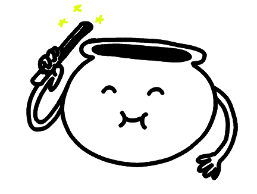

Au Gros Bouillon
( Moult recettes sans pub! )-

On s'active en cuisine!
<-
recette précédente
recette suivante
->
À propos
-- version αlphα -- dougy147 (2024)
Au Gros Bouillon est un projet personnel à but non lucratif. Aucune donnée n'est conservée. Les requêtes auprès des sites de recettes sont effectuées par le serveur. Au Gros Bouillon n'est affilié à aucun de ces sites. Les réponses brutes sont redirigées au client, avant d'être épurées, localement, de toute substance non comestible (publicité, pistage).